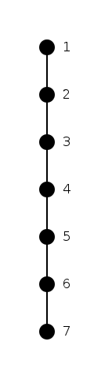
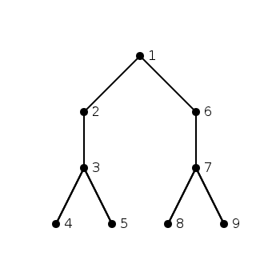
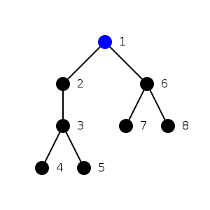

Least Common Ancestor in a Tree
[Under progress]
Introduction
Trees are one of the basic data structures used regularly. It is very straight-forward to design a tree, and use it. But the complexity arises when analysis has to be done on the tree. Trees are helpful in modeling parent child relationships between objects and when the distance between objects is not very important. But since the only information with every object is about its parent and its child, doing any analysis other than that requires traversal as one of the steps, which itself takes O(n) time. When the analysis is to be done once, it is not okay, but if it is to be done multiple times, it becomes costly.
One of the problems which is difficult to solve directly is finding the smallest sub-tree containing given leaf nodes. One solution is the whole tree. But it is possible to find smaller sub-trees which also contain the given leaves. One way is to look at each intermediate node, and find all the leaf nodes in it and then see if it contains given leaves. This can take O(n^2) time. For large trees this is not feasible, and imagine doing this in a UI application!
This problem is called the Least Common Ancestor problem. And this write-up discusses different algorithms to find it, with decreasing order of complexity.
(This is based upon a talk by Dr. Ramesh Hariharan at Strand Life Sciences.)
Linear Tree
As can be seen in the figure below, a linear tree can give solution in O(1) time. The node which is upper in the tree, is the least ancestor.
Lets look at more complex trees.
Trees as arrays
As we just saw that, with a linear tree the problem becomes very simplified. Searching for a node in a linear data structure is much more simpler than in a linked list. Trees are usually stored as a linked list, and although finding the least common ancestor using this data structure is possible it takes more than linear time.

In order to simplify the search of the LCA, we can do some pre-processing which will then make the runtime much faster. The data structure which we will use is as described below:
We traverse the tree as is shown in the array below. The data structure
remembers the rank of the node during traversal. Rank is the distance from the
topmost node.
Traversal -> [1 2 3 4 3 5 3 2 1 6 7 6 8 6 1]
Data structure -> [0 1 2 3 2 3 2 1 0 1 2 1 2 1 0]

Finding LCA in linear time
Creating a data structure which takes 2*n space, O(n), by pre-computing, and then using it to find the LCA in O(n) time
Finding LCA in constant time
Creating a data structure which takes O(n*log(n)) space, but finds the LCA in O(1) time
Finding LCA in constant time with linear time pre-computation
Creating a data structure which takes O(n) space with the help of blocks and then finds the LCA in O(1) time.